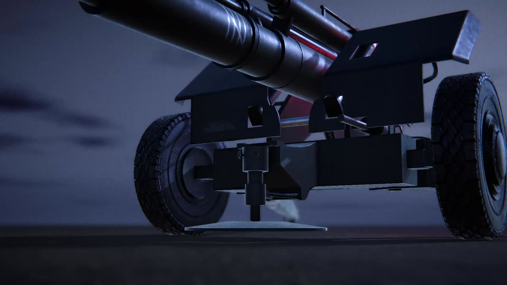

2A65 Msta-B Howitzer


The System
A 152 mm towed howitzer modelled as a procedure, not an animation: the crew emplaces the gun, fire control solves the shot, the crew lays it, loads it, fires, and the recoil shoves the carriage so the next round needs re-laying. An AI crew or a human operator can take the seat at any moment.
Fire Control
Ballistics solves the launch angle for a target, with both arcs (flat and high) for each powder charge. It computes in double and exposes float: at artillery speeds v⁴ reaches about 4×10¹¹, and near maximum range float cancellation flipped the sign of the discriminant, reporting reachable targets as unreachable. An independent impact predictor runs the solve in reverse; laying at the angle fire control reports and predicting the impact closes to 0.0001 m on every usable arc.IsLaid is computed, never stored, at a 0.001° tolerance. The first value tried, 0.1°, is a 35 m miss at 20 km.
One Seat, Two Crews
The gun holds an
IGunOperator and asks it for an order every frame. The AI and the player implement the same interface, so swapping who's in the seat is one assignment. Taking the seat copies the gun's current angles into the new operator first, so grabbing the wheels mid-slew stops the barrel under your hands instead of slamming it level. The handwheels on the model are driven by the gun's angles, never by input, so they turn when the AI lays the gun and stop at the gun's limits.
The Crew Drill
Swinging the gun beyond its ±14° traverse runs in phases on its own state: the jack lowers the gun onto its wheels, the trails lift, the gun swings, the spades go back down, the jack raises it again. The jack is two-staged like the real one: its base plate meets the ground before the wheels leave it. Each trail tilts at its hinge by
Loading is a second FSM alongside gunnery, because the loaders work while the gunner lays: shell rammed, charge inserted, breech closed, as on the real separate-loading 2A65. Step times live on a crew-drill asset, so a faster crew is a new asset. The breech won't take the next round until the empty case has flown clear.
asin(gun drop ÷ hinge-to-spade reach) so a planted spade doesn't ride up with the front of the gun.Loading is a second FSM alongside gunnery, because the loaders work while the gunner lays: shell rammed, charge inserted, breech closed, as on the real separate-loading 2A65. Step times live on a crew-drill asset, so a faster crew is a new asset. The breech won't take the next round until the empty case has flown clear.
Recoil and Re-laying
Every shot shoves and twists the carriage, hardest on the first round and settling as the spades bed in, with numbers on a ground-type asset. The AI remembers its target as a point, not angles, and re-solves after every shove, so rounds keep landing on target while the gun drifts.
Bugs Worth Recognising
Measuring from the trunnion while the shell leaves the muzzle landed every round 8–9 m long. The impact marker slid with the barrel during recoil until the gun measured from a point on the cradle that elevates but doesn't recoil. And the jack froze a hair short of raised when recording at a fixed 60 fps: the stop check used
Mathf.Approximately while the done check tested the exact end. A stop check and a done check must be the same test.
Art
Modelled in Blender, textured in Substance Painter, from public references. The equilibrator rig is solved in its parent's local space, because a Unity
AimConstraint rolled visibly under traverse.